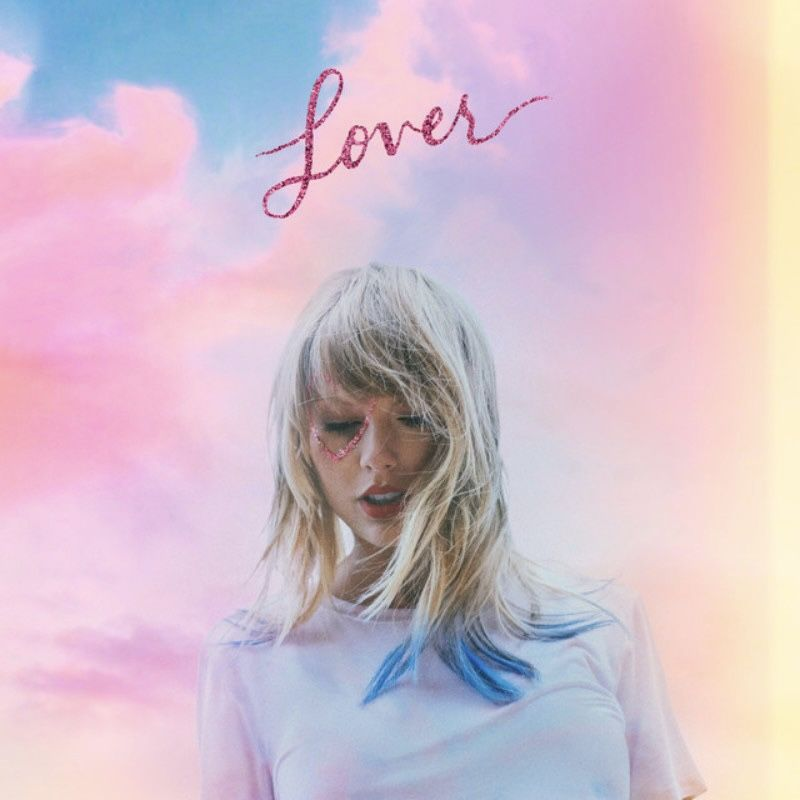
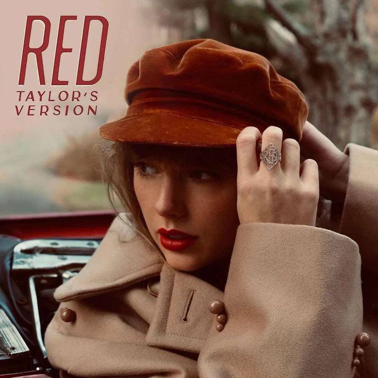
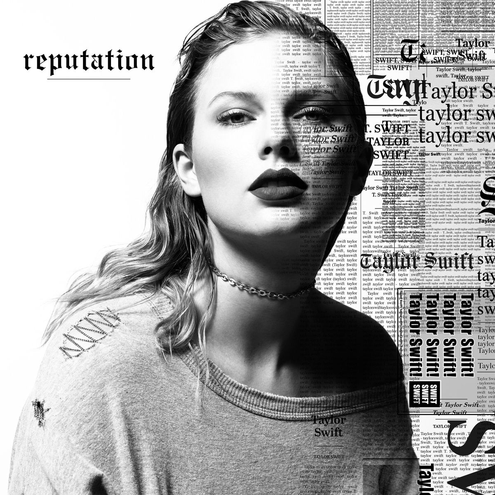
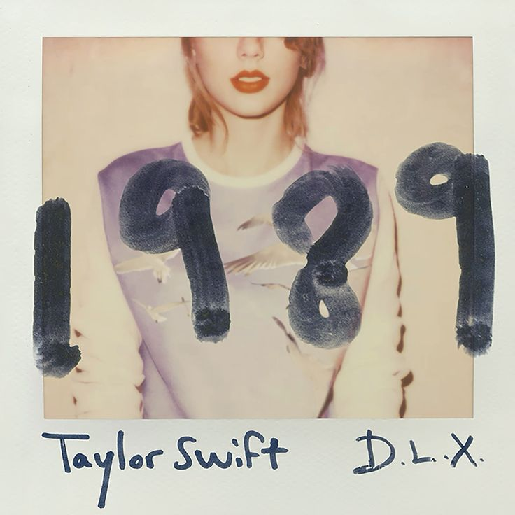
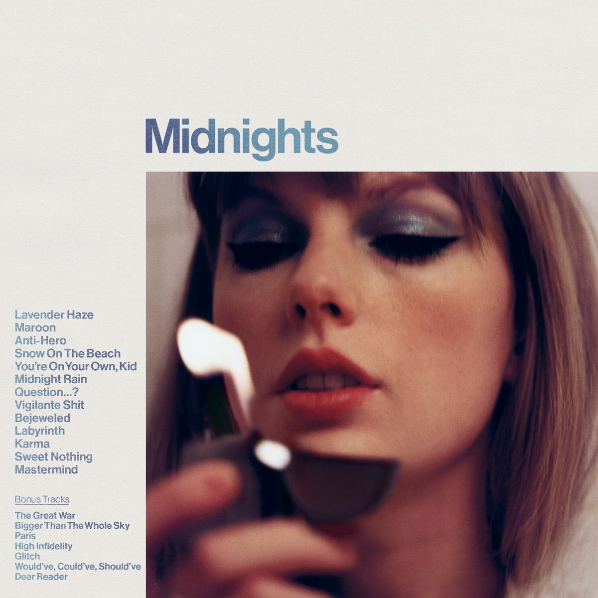
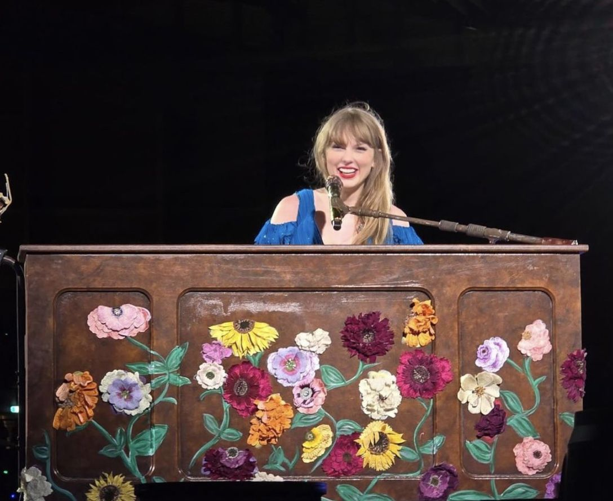
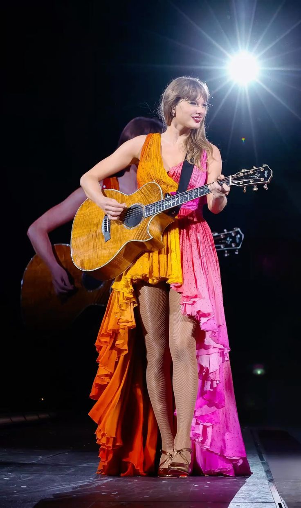

Setlist

Lover

| Nº | Música |
|---|---|
| Lover | |
| 1 | Miss Americana & the Heartbreak Prince |
| 2 | Cruel Summer |
| 3 | The Man |
| 4 | You Need to Calm Down |
| 5 | Lover |
Fearless
| Nº | Música |
|---|---|
| Fearless | |
| 1 | Fearless |
| 2 | You belong with me |
| 3 | Love Story |
RED

| Nº | Música |
|---|---|
| RED | |
| 1 | 22 |
| 2 | We Are Never Ever Getting Back Together |
| 3 | I knew You were trouble |
| 4 | All Too Well (10 Minute Version) |
Speak Now

| Nº | Música |
|---|---|
| Speak Now | |
| 1 | Enchanted |
reputation

| Nº | Música |
|---|---|
| reputation | |
| 1 | Ready for it??? |
| 2 | Delicate |
| 3 | Don't Blame Me |
| 4 | LWYMMD |
Folklore
| Nº | Música |
|---|---|
| folklore | |
| 1 | the 1 |
| 2 | betty |
| 3 | the last great american dynasty |
| 4 | august |
| 5 | ilicit afairs |
| 6 | my tears ricochet |
| 7 | cardigan |
Evermore
| Nº | Música |
|---|---|
| evermore | |
| 1 | 'tis the damn season |
| 2 | betty |
| 3 | the last great american dynasty |
| 4 | august |
| 5 | ilicit afairs |
| 6 | my tears ricochet |
| 7 | cardigan |
1989

| Nº | Música |
|---|---|
| 1989 | |
| 1 | style |
| 2 | Blank Space |
| 3 | Shake It Off |
| 4 | Wildest Dreams |
| 5 | Bad Blood |
The tortured poets department
| Nº | Música |
|---|---|
| The tortured poets department | |
| 1 | But Daddy I Love Him / So High School |
| 2 | Who's Afraid Of Little Old Me? |
| 3 | Down Bad |
| 4 | Fortnight |
| 5 | The Smallest Man Who Ever Lived |
| 6 | I Can Do It With A Broken Heart |
Midnights

| Nº | Música |
|---|---|
| Midnights | |
| 1 | Lavander Haze |
| 2 | Anti-hero |
| 3 | Midnight Rain |
| 4 | Vigilant Shit |
| 5 | Bejeweld |
| 6 | Matermind |
| 7 | Karma |
Surprise songs


| Nº | Música |
|---|---|
| Surprise songs | |
| 1 | Música Aleatoria |
| 2 | Música Aleatoria |
Introduções dos Álbuns de Taylor Swift
Taylor Swift
2006 — Álbum de Estreia
Eu só quero dizer que nunca imaginei que isso realmente aconteceria comigo. Escrever músicas é a minha forma de processar a vida, os sentimentos e o amor. Cada uma dessas faixas é um pedaço da minha história e dos meus sentimentos mais sinceros sobre amadurecer e se apaixonar.
Fearless
2008 — Definindo a Coragem
Acredito que 'fearless' (destemido) não significa não ter medo. Não significa que você seja invencível. Significa que você tem muitos medos, mas decide ir em frente mesmo assim. Ter medo é ter dúvidas, mas viver com coragem é amar apesar disso.
Speak Now
2010 — As Palavras Não Ditas
Há um momento para falar o que você sente. As pessoas nem sempre dizem o que realmente pensam no momento em que deveriam. Este álbum é sobre todas as coisas que eu gostaria de ter dito nas horas certas, mas não tive coragem.
RED
2012 — Emoções Intensas
Em um estado de paixão intensa, tudo é muito rápido e fora de controle. As emoções eram tão fortes que pareciam ser de uma cor específica: vermelho. Este álbum é sobre os desgostos amorosos, as descobertas e os sentimentos intensos de um amor perigoso.
Era-1989
2014 — Transição e Mudança
Eu passei a maior parte da minha vida ouvindo que as pessoas não mudam. Mas depois percebi que a mudança é a única constante. Este álbum é sobre se encontrar, mudar de perspectiva e renascer em uma nova fase da vida.
Reputation
2017 — A Ilusão das Aparências
Achamos que conhecemos alguém, mas a verdade é que só conhecemos a versão dessa pessoa que ela escolhe nos mostrar. A reputação é uma ilusão criada por estranhos. No final das contas, quando o barulho diminui, tudo o que resta é o que é real.
Lover
2019 — Uma Carta de Amor
Este álbum é uma carta de amor ao próprio amor — em toda a sua glória caótica, apaixonada, dolorosa e maravilhosa. É sobre abraçar todas as cores da vida e decidir focar naquilo que você ama, em vez das coisas que te assustam.
Folklore
2020 — O Escapismo e a Imaginação
Em isolamento, minha imaginação voou longe. Este álbum é o resultado de histórias que não são apenas minhas, mas de personagens, mitos e memórias entrelaçadas. A fantasia se tornou meu refúgio quando o mundo parou.
Evermore
2020 — Aprofundando no Bosque
Nós simplesmente não conseguíamos parar de escrever músicas. Parecia que estávamos na beira da floresta do folklore e tínhamos duas escolhas: voltar ou adentrar ainda mais fundo. Escolhemos ir mais fundo.
Midnghts
2022 — As Insônias da Madrugada
Esta é uma coleção de músicas escritas no meio da noite, uma jornada através de terrores e belos sonhos. O chão em que pisamos e os demônios que enfrentamos. Para todos nós que ficamos acordados, virando de um lado para o outro, procurando pela luz.
The Tortured Poets Department
2024 — O Manifesto de Cura
Entramos no departamento como poetas torturados e saímos como contadores de histórias curados. Esta obra é o registro de um período fatal e dramático da vida, cujas feridas já foram fechadas e transformadas em arte. Uma vez que contamos a história, nos libertamos dela.
Fonte das Citações
Textos extraídos e traduzidos dos encartes oficiais dos álbuns (2006–2024).